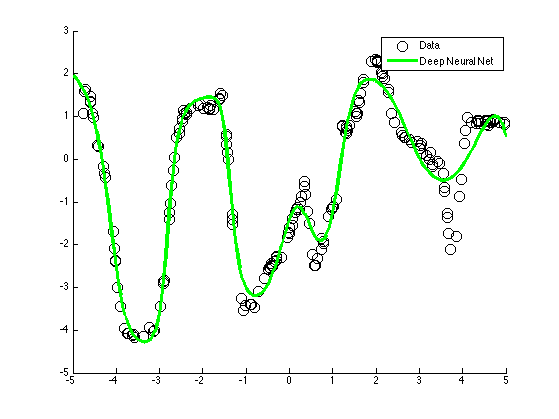
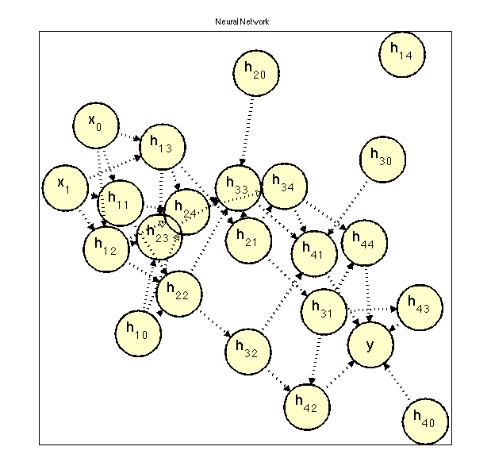

L1 regularization on a deep feedforwrd neural net
fig = 1000;
lambda = 1;
options.maxIter = 100;
options.adjustStep = 2;
options.order = -1;
options.corrections = 10;
options.verbose = 0;
nInstances = 200;
nVars = 1;
[X,y] = makeData('regressionNonlinear2',nInstances,nVars);
X = [ones(nInstances,1) X];
nVars = nVars+1;
nHidden = [5 5 5 5];
nParams = nVars*nHidden(1);
for h = 2:length(nHidden);
nParams = nParams+nHidden(h-1)*nHidden(h);
end
nParams = nParams+nHidden(end);
funObj = @(weights)MLPregressionLoss_efficient(weights,X,y,nHidden);
fprintf('Training neural network for regression...\n');
lambdaL2 = 1e-3;
wMLP = randn(nParams,1);
for i = 1:300
w_old = wMLP;
wMLP = L1GeneralProjection(@penalizedL2,wMLP,lambda*ones(nParams,1),options,funObj,lambdaL2);
if norm(w_old-wMLP,inf) < 1e-3
break;
end
end
figure; hold on
Xtest = [-5:.05:5]';
Xtest = [ones(size(Xtest,1),1) Xtest];
yhat = MLPregressionPredict_efficient(wMLP,Xtest,nHidden);
plot(X(:,2),y,'ko','markersize',10);
h=plot(Xtest(:,2),yhat,'g-');
set(h,'LineWidth',3);
legend({'Data','Deep Neural Net'});
inputWeights = reshape(wMLP(1:nVars*nHidden(1)),nVars,nHidden(1));
offset = nVars*nHidden(1);
for h = 2:length(nHidden)
hiddenWeights{h-1} = reshape(wMLP(offset+1:offset+nHidden(h-1)*nHidden(h)),nHidden(h-1),nHidden(h));
offset = offset+nHidden(h-1)*nHidden(h);
end
outputWeights = wMLP(offset+1:offset+nHidden(end));
adj = zeros(nVars+sum(nHidden)+1);
for i = 1:nVars
for j = 1:nHidden(1)
if abs(inputWeights(i,j)) > 1e-4
adj(i,nVars+j) = 1;
end
end
end
for h = 1:length(nHidden)-1
for i = 1:nHidden(h)
for j = 1:nHidden(h+1)
if abs(hiddenWeights{h}(i,j)) > 1e-4
adj(nVars+sum(nHidden(1:h-1))+i,nVars+sum(nHidden(1:h))+j) = 1;
end
end
end
end
for i = 1:nHidden(end)
if abs(outputWeights(i)) > 1e-4
adj(nVars+sum(nHidden(1:end-1))+i,end) = 1;
end
end
labels = cell(length(adj),1);
for i = 1:nVars
labels{i,1} = sprintf('x_%d',i-1);
end
for h = 1:length(nHidden)
for j = 1:nHidden(h)
i = i + 1;
labels{i,1} = sprintf('h_%d_%d',h,j-1);
end
end
labels{end,1} = 'y';
figure;
drawNetwork('-adjMat',adj,'-nodeLabels',labels)
title('Neural Network');
Training neural network for regression...
ans =
graphViz4Matlab handle
Properties:
path: [1x69558 char]
graphVizPath: 'unknown'
nnodes: 23
nedges: 40
currentLayout: [1x1 Gvizlayout]
layouts: [1x1 struct]
adjMatrix: [23x23 double]
isvisible: 1
nodeArray: [1x23 graphViz4MatlabNode]
edgeArray: [1x40 struct]
fig: 1222
ax: 575.0293
doubleClickFn: []
selectedNode: []
minNodeSize: 0.0427
maxNodeSize: 0.1496
undirected: 0
flipped: 0
knownLayouts: {1x8 cell}
defaultEdgeColor: [0 0 0]
edgeColors: []
edgeStyles: []
square: 1
splitLabels: 1


